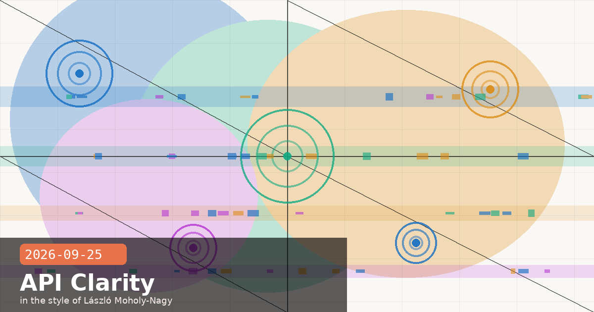

Cache Diagnostics GA, Refusal Billing Expansion, Claude Tag Personal Connectors, and Code v2.1.282

🧭 Cache Diagnostics Leaves Beta — Drop the Header, Add the Object
Cache diagnostics is now generally available on the Claude API. If you've been relying on the cache-diagnosis-2026-04-07 beta header to get cache miss reasons in API responses, you can — and should — migrate to the new stable interface: include a diagnostics object in your Messages request body instead. The beta header still works for now, but it will eventually be retired.
What changed
Opt-in mechanism: Add the diagnostics object to any POST /v1/messages request to enable diagnostics for that call.
Always-present response field: The response from POST /v1/messages now always includes a top-level diagnostics field — it is null when the request did not include the diagnostics object, and populated when it did.
Cache miss reasons: The populated diagnostics object contains cache_miss_reason with concrete variant values so you can distinguish cold misses from expiry from key mismatches.
# Before (beta header approach — works but will be retired)
headers = {
"anthropic-beta": "cache-diagnosis-2026-04-07"
}
# After (GA approach — use the diagnostics object)
body = {
"model": "claude-opus-5-5",
"messages": [...],
"diagnostics": {} # empty object is enough to opt in
}
# Response will include: { "diagnostics": { "cache_miss_reason": "..." } }
Actionable: update your staging environments first
If you have monitoring or alerting keyed off the beta header's response fields, check whether the GA response schema is byte-compatible before switching production. The field names are the same, but it is worth a quick diff of the response shape against your existing parsing code. Requests that send both the old header and the new diagnostics object continue to work — useful for a rolling migration.
cache diagnosticsGAAPI release notescache miss reasonbeta graduationMessages API
🧭 Pre-Output Refusals Now Billed in Three New Categories — Audit Your Cost Assumptions
Anthropic has expanded refusal billing: pre-output refusals (those that arrive before any model text is generated) are now billed when they fall into one of three categories: bio, frontier_llm, and reasoning_extraction. The stated reason is that false-positive rates for these classifiers are low enough that billing is now warranted. Mid-stream refusals — where the model begins generating and then stops — were already billed at full rates and remain unchanged.
What is and isn't affected
Now billed (pre-output):bio (biosafety category), frontier_llm (attempts to elicit Claude to replicate other frontier models), reasoning_extraction (attempts to extract the model's internal reasoning traces).
Still free (pre-output): All other refusal categories retain the existing behaviour — no charge before output.
Billing rate: When billed, refusals are charged at the standard rates of the model that processed the request — the same as a successful completion.
Fallback credit policy: Unchanged — the credit mechanism for valid requests that are incorrectly refused still applies.
Surfaces: Applies across the API, Claude.ai, and Enterprise deployments.
If you run red-teaming, safety evals, or adversarial probing pipelines
Pipelines that deliberately send bio-adjacent or model-replication prompts to measure refusal rates will now incur costs. This is a meaningful change for compliance and security teams running automated adversarial test suites at volume. Review your eval budget assumptions and consider batching or rate-limiting adversarial runs, or routing them through a dedicated test API key with cost caps set in the Anthropic Console.
You can inspect the refusal category in the API response via stop_details.category — this field has been present since the refusal-details rollout and now doubles as the billing signal for these three categories.
🧭 Claude Tag in Slack Now Pulls from Your Personal Connectors — Not Just Shared Channel Resources
Claude Tag in Slack has gained a significant new capability: when you @Claude in a channel, it can now access connectors tied to your individual account — Google Drive, calendars, CRM accounts — not just the shared connectors an admin has attached at the channel or workspace level. This distinction matters more than it might seem: it enables individual team members to contribute personalised, permission-gated data to collaborative channel conversations without exposing that data to the whole channel by default.
Two output modes to understand
Review mode (default): Claude composes a response and shows it to you privately first. You approve before it posts to the channel. Useful when the response might contain data you want to redact or context-check before colleagues see it.
Auto mode: Claude screens the response for sensitive content before posting automatically. Enterprise admins can enforce review mode org-wide, overriding individual user preferences where compliance requires it.
Audit trail and privacy
Activity from personal connectors logs to the individual user's account activity trail — not to the shared channel audit log. This preserves privacy between team members while still giving IT and compliance teams per-user accountability. From a compliance architecture standpoint, it means personal connector invocations do not appear as "channel events" and must be reviewed through per-user access logs in the Anthropic Console.
Where this unlocks real value
The canonical use case from Anthropic's announcement is RFP drafting: one team member pulls from their personal CRM opportunity data, another from their Google Drive proposal archive — Claude aggregates both into a channel-visible draft without either person having to export sensitive data to a shared drive first. If your team already uses Claude Code's connector integrations for individual dev tooling, this is the same model brought into Slack's collaborative surface.
Availability: Rolling out now on Team plans. Enterprise to follow.
Claude TagSlackpersonal connectorsGoogle DriveCRMreview modeauto modeTeam planEnterprisechannel collaboration
🧭 Claude Code v2.1.282: maxProseWidth, Critical Thinking-Block Fixes, and a Web Search Session-History Patch
Claude Code v2.1.282 is primarily a stability and correctness release, but it ships one new setting worth knowing — maxProseWidth — alongside fixes for two bugs that could cause silent, hard-to-diagnose session degradation.
New: maxProseWidth setting
The new maxProseWidth setting lets you cap the column width of Claude's prose output in terminal sessions while leaving tables and code blocks free to use full terminal width. Add it to your project's settings.json:
{
"maxProseWidth": 100 // prose wraps at 100 chars; code/tables still expand to terminal width
}
This is useful when piping Claude's output to tools that expect fixed-width text, or when working in wide terminals where long prose lines become hard to scan.
Critical fixes to know about
Web search results in session history: Conversations were failing with API errors when resuming sessions whose history contained undecryptable web search results. This manifested as unexplained errors on session resume with no obvious relationship to the current prompt — now fixed.
Extended thinking dropped during slash commands: Running a slash command (e.g. /review, /test) could silently drop extended thinking configuration for the remainder of the session — now preserved correctly.
Thinking blocks lost after model switches: Switching models mid-session caused thinking blocks to disappear from the context — a subtle regression that affected users pinning to specific models for different phases of a task.
Auto mode prompt-cache reuse after session resume: Auto mode now correctly reuses the permission classifier's prompt cache when resuming a session rather than recomputing it from scratch — a meaningful latency and cost improvement for long-running sessions.
Security: dangerous-rm check extended to shell variable patterns: The check that flags potentially dangerous rm operations now catches patterns like rm -rf $DIR/subpath where a shell variable is followed by a directory name — previously only bare paths were flagged.
If you've seen mysterious API errors on session resume
The web search history bug was subtle: if a previous session used web search and those results were stored in session history, resuming that session could fail with cryptic API errors that looked like network or rate-limit issues. After upgrading to 2.1.282, any session you previously had to abandon and restart from scratch due to these errors should resume correctly. Check the Claude Code CHANGELOG for the full fix list.